September 2019 - Bremen
Prämien für AUSWEG GESUCHT
Mitte des Jahres hat mich VomHörenSehen gefragt, die Prämien für den diesjährigen Kurzfilmwettbewerb "Ausweg Gesucht" zu gestalten. Insgesamt elf Filme von Jugendlichen zwischen 14 und 25 Jahren wurden beim offiziellen Screening mit Preisen geehrt. Glückwunsch!
Foto unten: Magdalena Stengel
{kind=link}
{kind=link}
August 2019 - Bremen
30 Jahre Mauerfall
Die Feier des Mauerfall-Jubiläums wurde dieses Jahr von Urbanscreen dirigiert. Insgesamt sollten sieben Fassaden beschienen werden, die ich zu Vorschauzwecken wieder einmal als Scheibenmodelle hergestellt habe. Fotos gibts erstmal nur vom Humbold Forum, Berolina- sowie Alexander-Haus und der Gethsemanekirche. Hier gehts zur offiziellen Urbanscreen Doku auf Vimeo.
 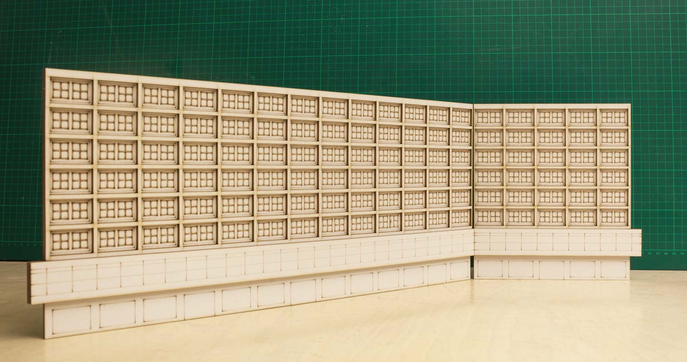
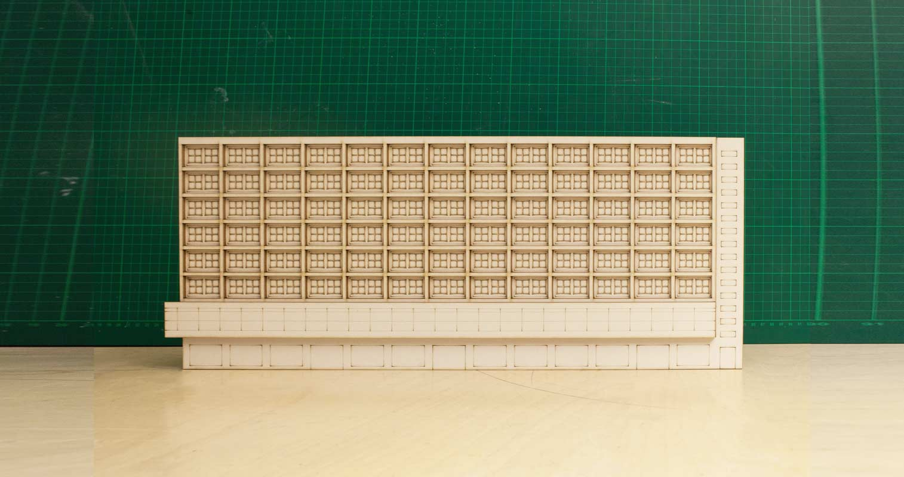
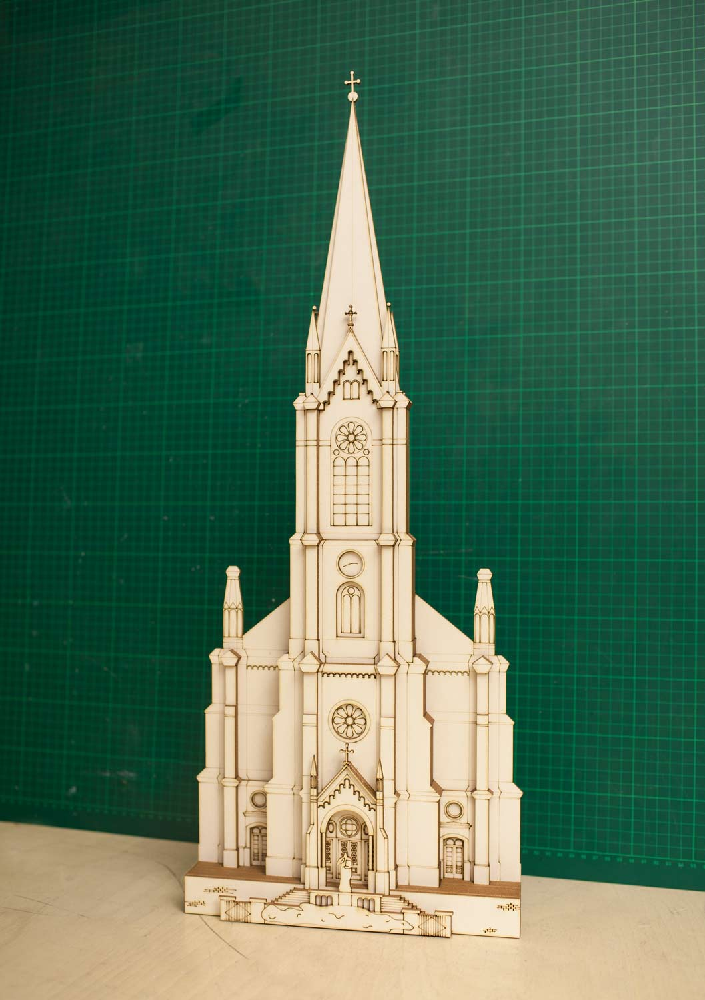
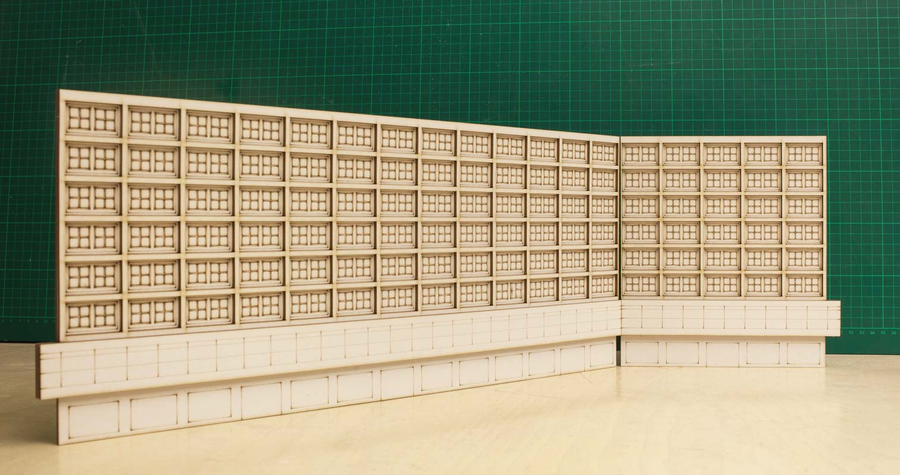
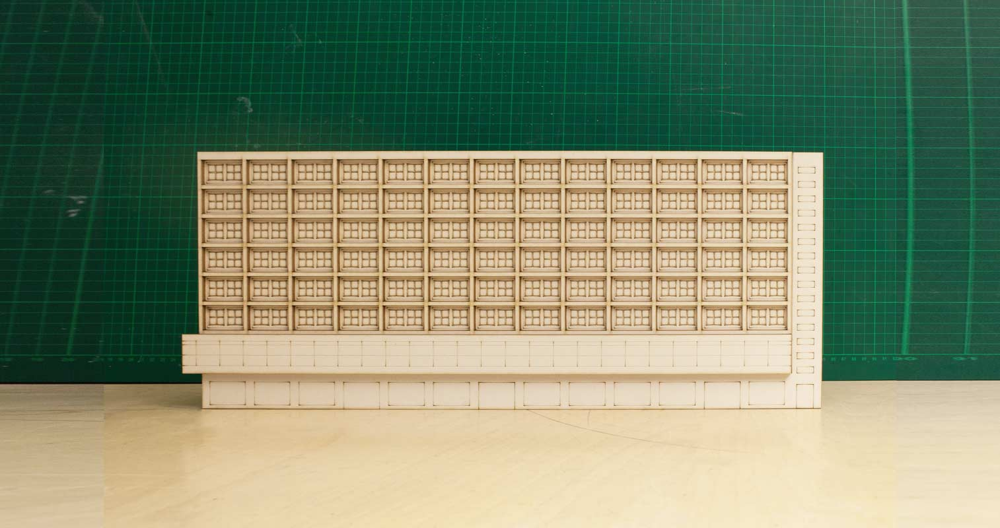
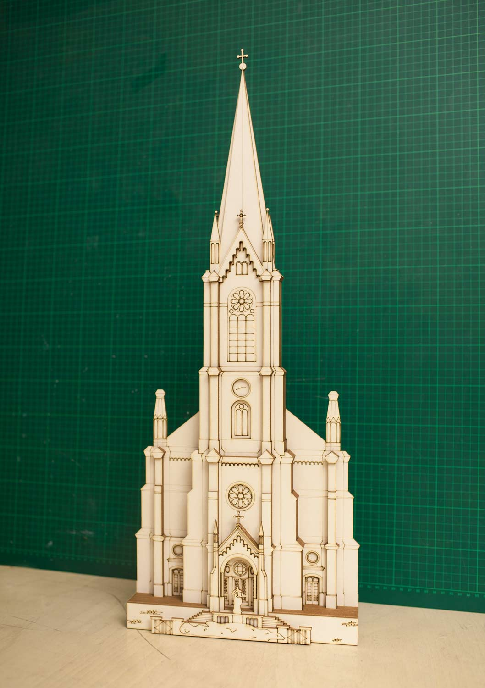
{kind=link}
{kind=link}
{kind=link}
Oktober 2018 - Bremen
Logo als Aufsteller
Dieser 3D-gedruckte Logoaufsteller für die Firma artundweise aus Bremen besteht aus ingesamt 11 magnetischen Lettern. Diese können auf einer Bodenplatte aus Acrylglas einrasten oder an jeglichen magnetischen Oberflächen spielerisch kombiniert werden.
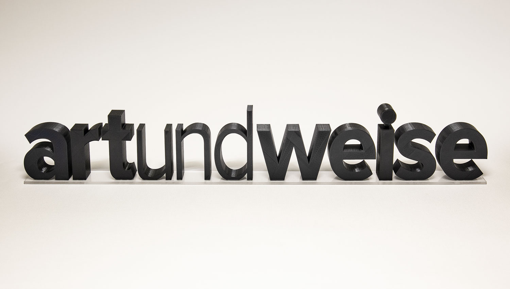 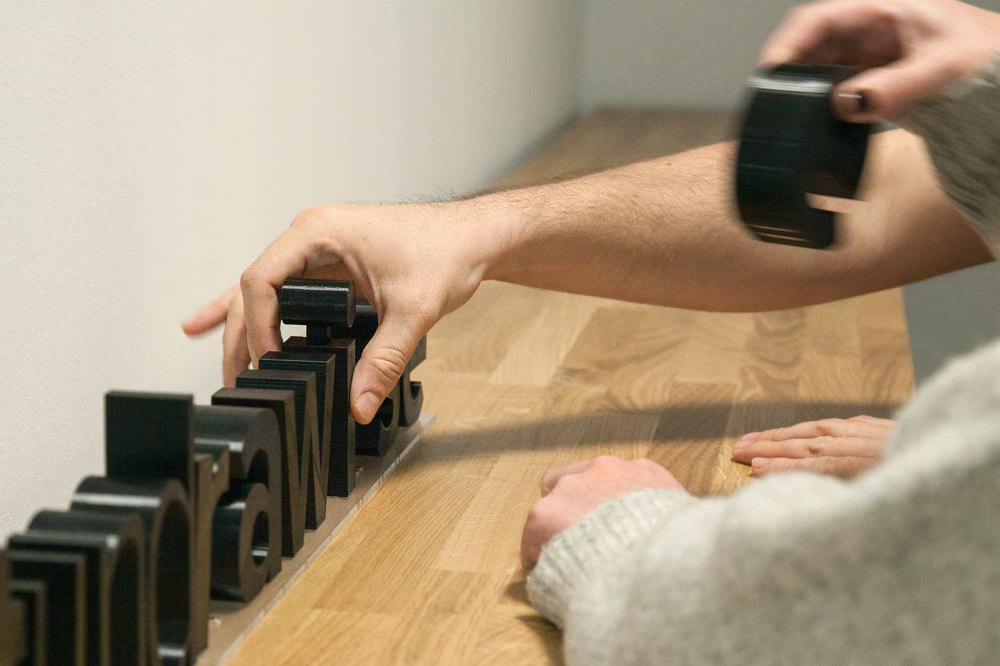{kind=link}
{kind=link}
Juli 2018 - Bremen
Drei Mockups für das Deutschlandjahr
Wieder im Rahmen einer Urbanscreen-Produktion baute ich Modelle von der "Atlanta–Fulton Public Library" (Bauhaus Architekt Marcel Breuer), dem "Athenæum" in Indianapolis, einem Clubhaus deutscher Einwanderer im 19. Jahrhundert, sowie von der deutschen Botschaft in Washington D.C..
So viel deutsch? Das Goethe-Institut USA möchte das "Deutschlandjahr" zum Anlass nehmen, um die deutsch-amerikanische Freundschaft zu betonen. Das passiert nicht zuletzt auch über die Wahl der Gebäude, auf die projiziert werden soll.
{kind=link}
{kind=link}
{kind=link}
{kind=link}
{kind=link}
{kind=link}
{kind=link}
August 2017 - Bremen
Modell für die Luminale
Zur Produktion von Urbanscreens Cross Hatch baute ich ein Mockup der Europäischen Zentralbank, kurz EZB. Auf dem drei Meter breiten Schichtmodell aus Finnpappe wurde probe-projiziert. So konnten Animationen besser im Raum gedacht - und vorallem überdacht - werden, als am bloßen Bildschirm. Die Vorbereitung der Daten und Erstellung des Mockups geschah durch mich, gelasert wurde im Oldenburger FabLab. Danke Tjark.
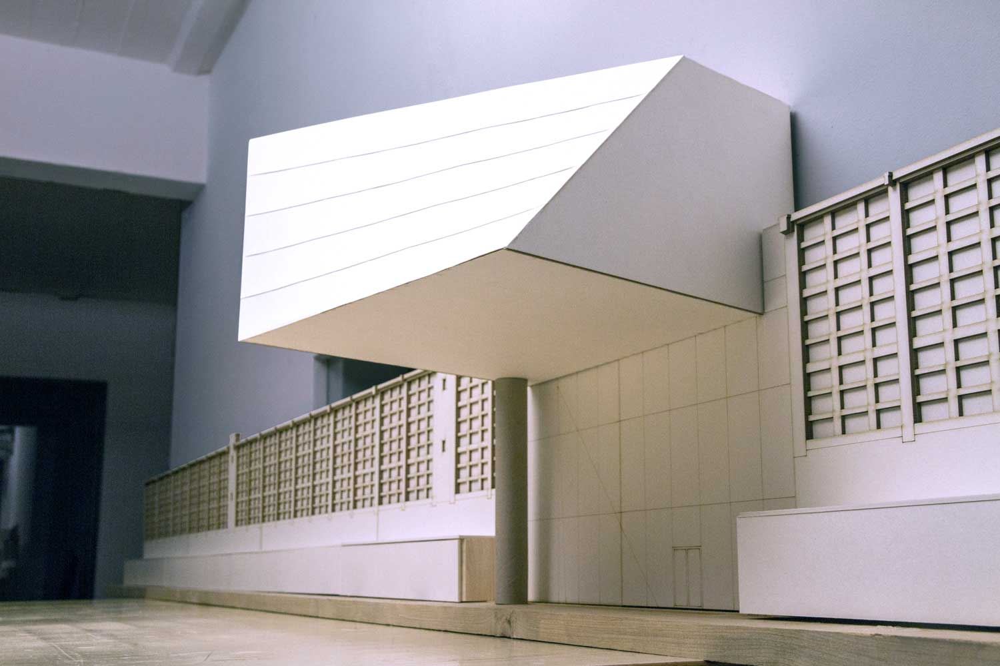{kind=link}
{kind=link}
Januar 2018 - Bremen
Diamond Mockup
Für die Home-Electronics Messe ISE in Amsterdam gestaltete Urbanscreen eine Lichtskulptur zur Demonstration von 4k-Projektoren der Firma NEC. Eine Version des Polygon-Körpers plus Leinwand im Maßstab 1:3 sollten im Büro zur Simulation und Produktion des Video-Contents behilflich sein. Die Teile des "Diamanten" ließ ich aus 3mm PVC fräsen, verbaute sie mit speziellem Kunststoffkleber und gab dem Ganzen einen matt grauen Sprühlack-finish.
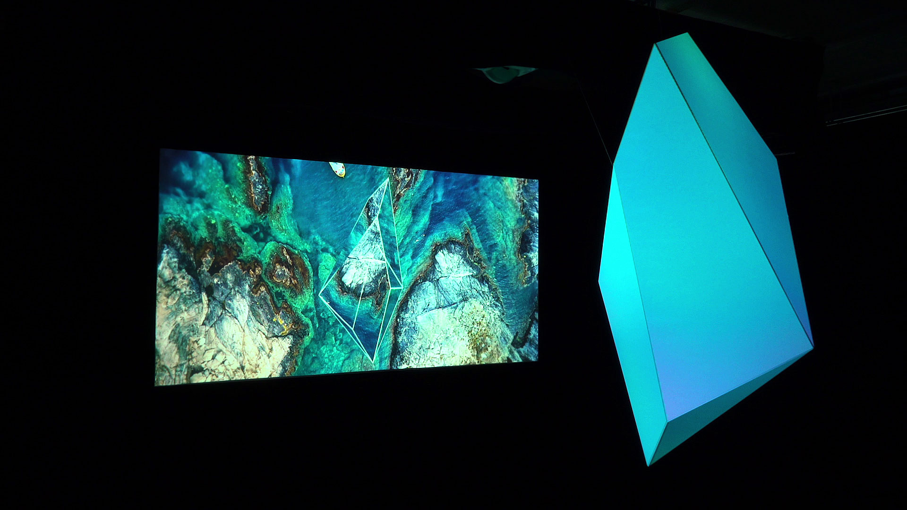{kind=link}
April bis August 2017 - Bremen
Die ersten Modelle
Gleich zu Anfang meines Praktikums bei Urbanscreen war ich beteiligt an der Produktion von "Small Talks", einer Geschichte über die Entstehung von Sprache. Neben der Animation eines Teils dieser Show, sollte ich ein Modell der Frontfassade des Goethe-Institutes in Krakau erstellen. Vier Schichten Graupappe ergeben ein ungefähres Abbild der Tiefe aller Fassadenelemente.
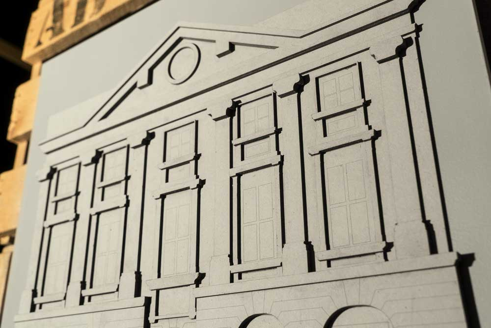{kind=link}
Danach beginnt meine freiberufliche Zusammenarbeit mit Urbanscreen: Das zweite Modell sollte die Fassade des Rathauses in Barcelona werden und der Teilnahme am "La Mercè Festival" im September 2017 dienen.
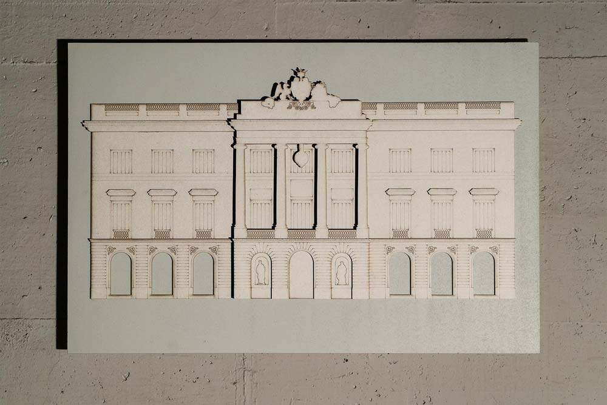{kind=link}
Das dritte Modell entstand für die Zusammenarbeit Urbanscreens und dem Baumaschinen Hersteller Caterpillar. Dieser plante das Launching-Event eines neuen Baggers im Trainings Center in Málaga, Spanien, mit einer Projektion zu feiern. Dieses Gelände ist eine 100 mal 60 Meter messende Sandkuhle, die ich in 25 Höhenprofile eingeteilt, gefräst und nachher mit Hasendraht, Leinen und Acrylfarbe zur Leinwand der Testprojektion hab werden lassen.
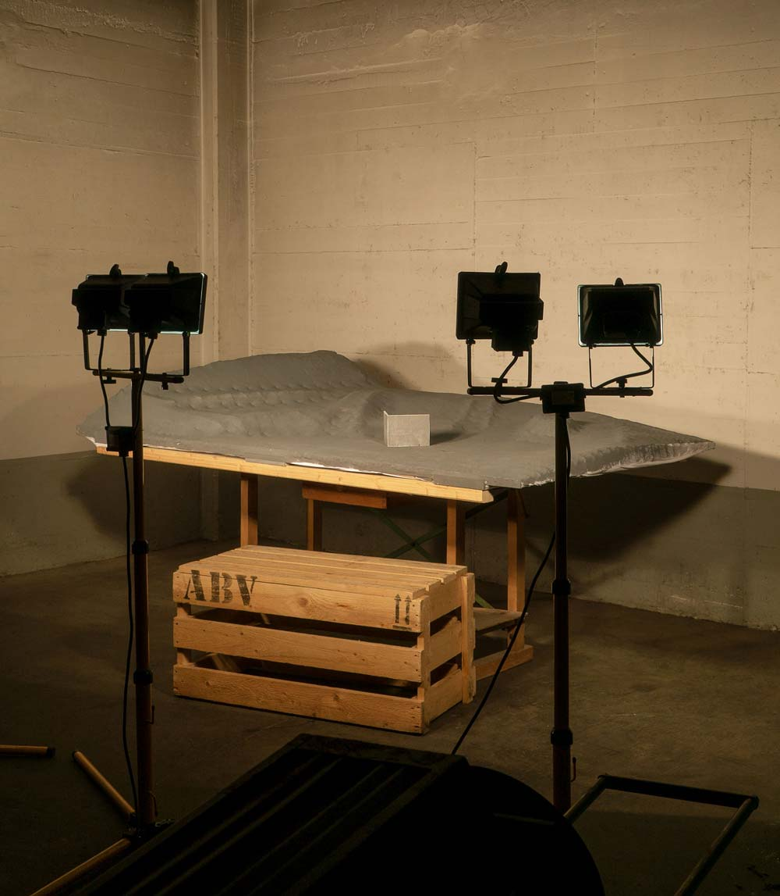 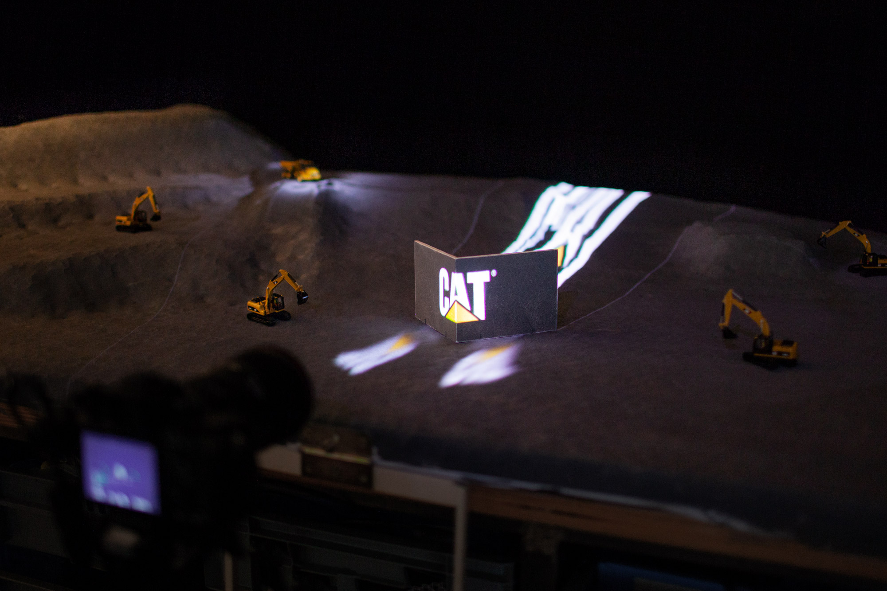 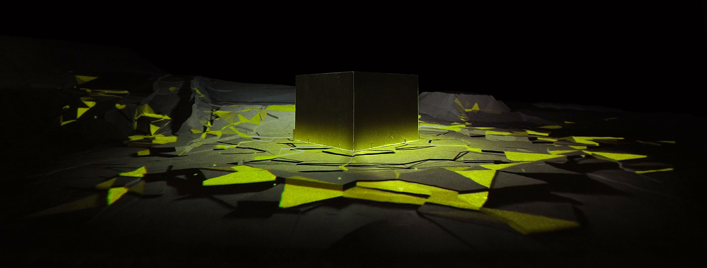{kind=link}
{kind=link}
{kind=link}
März 2017 - Bremen
Kalimba- und Sansulabau
Nach meinem Bachelorabschluss im September 2017 habe ich mich an den Bau von Kalimbas und einer Sansula herangewagt. Auch Daumenpiano genannt, kommen diese Instrumente vorallem aus Afrika und Südamerika, werden ursprünglich gerne aus Schrott hergestellt und als Mitbringsel und Andenken verkauft. Ich machte mich daran, Mahagoni Holz zu shapen, Klangblätter aus einem Bandsägenblatt zu schneiden und Buchenfuniere zu wässern, biegen und leimen, sowie mich mit dem Verarbeiten von Fellen zu beschäftigen. Hier einige Ansichten verschiedener Ergebnisse.
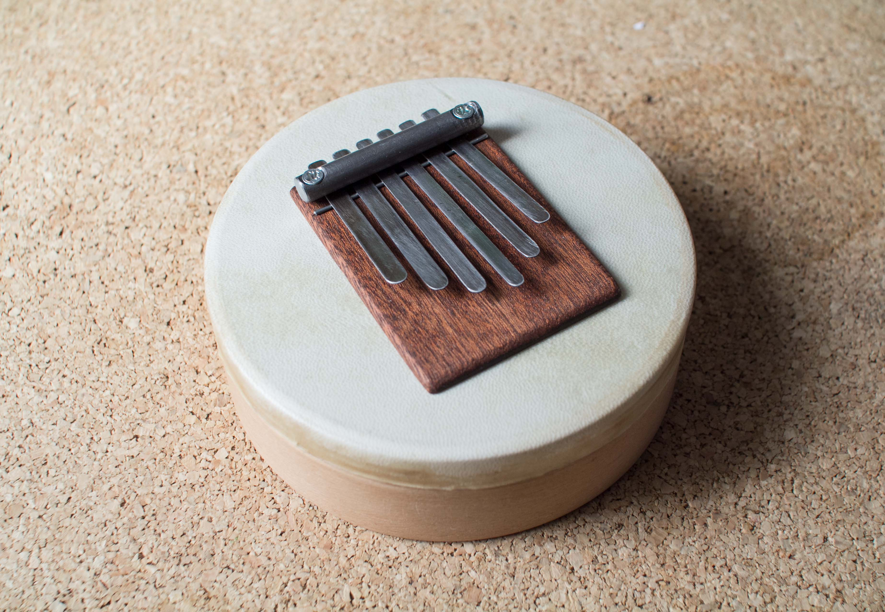 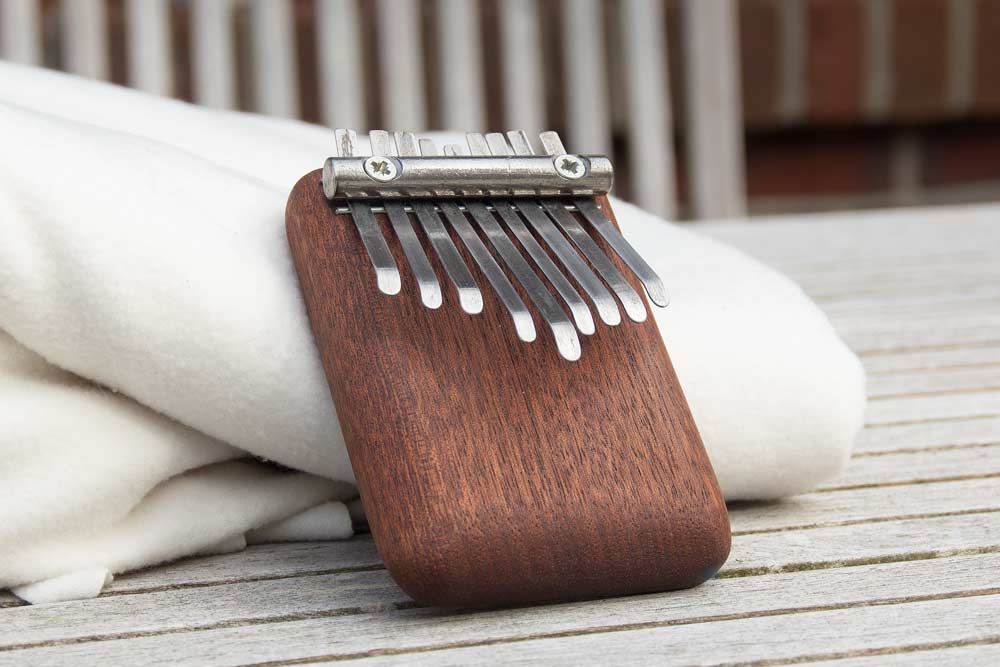{kind=link}
{kind=link}
Januar 2014 - Bremen
Inflateables als temporäre Räume
Im Kurs "Raumökonomie" während meines Studiums, geleitet von Oliver Niewiadomski, entstand ein Konzept und Prototyp zum Thema "temporäre Räume". Durch Kombination mehrerer Inflatables, genauer gesagt Verknüpfung ihrer Gelenke, lassen sich verschieden geometrische Körper erzeugen. Theoretisch könnten diese Outdoor-Parties vor Unwetter schützen, Ausstellungsstände beherbergen oder als lebensgroßes Geometriespiel fungieren. Letztlich zählt jedoch eher die Erfahrung und Verarbeitung des Materials, sowie der Prozess zu einem modularen System.
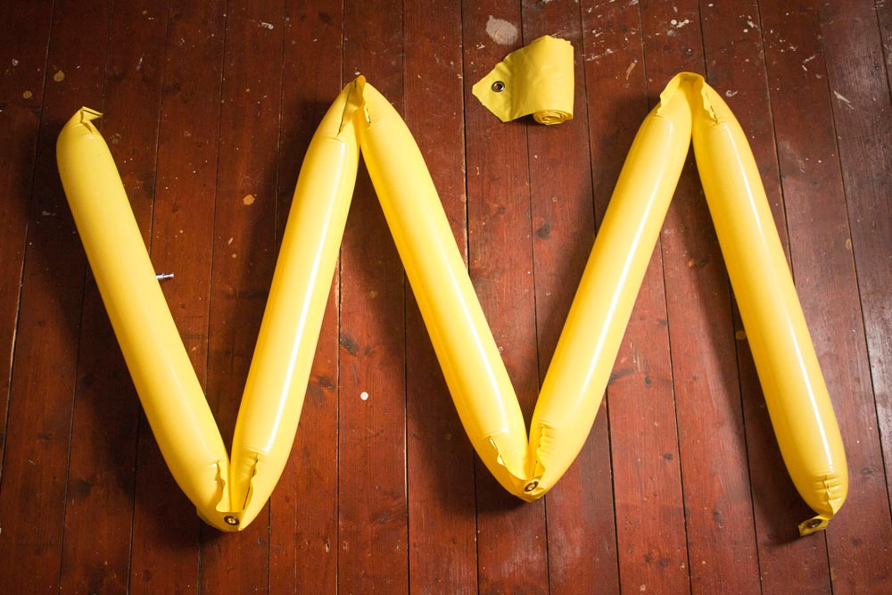 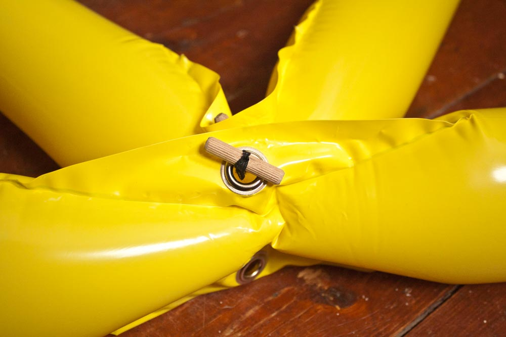{kind=link}
{kind=link}